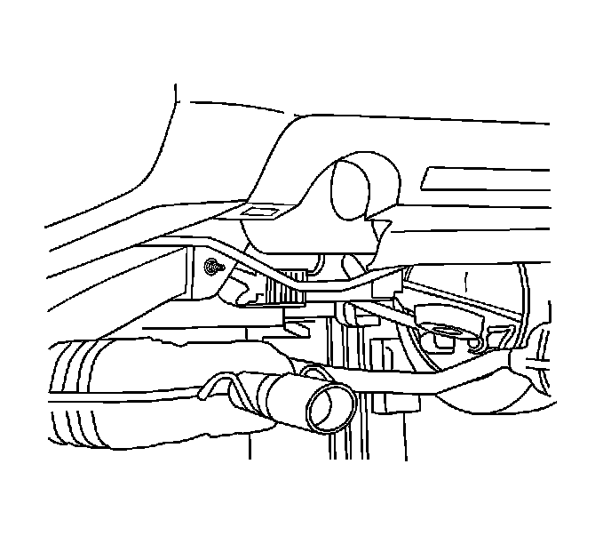
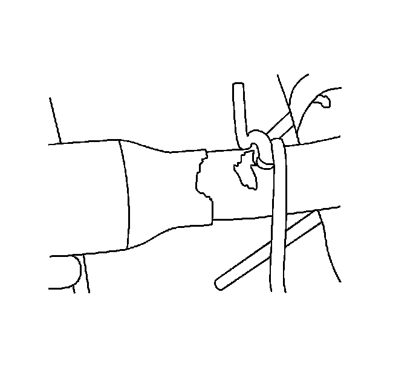
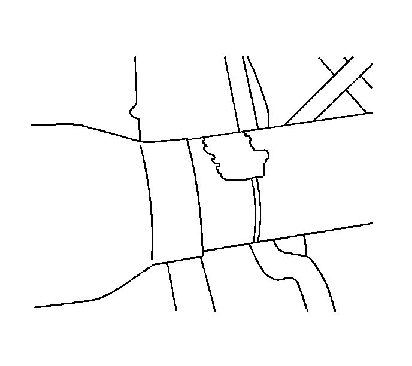
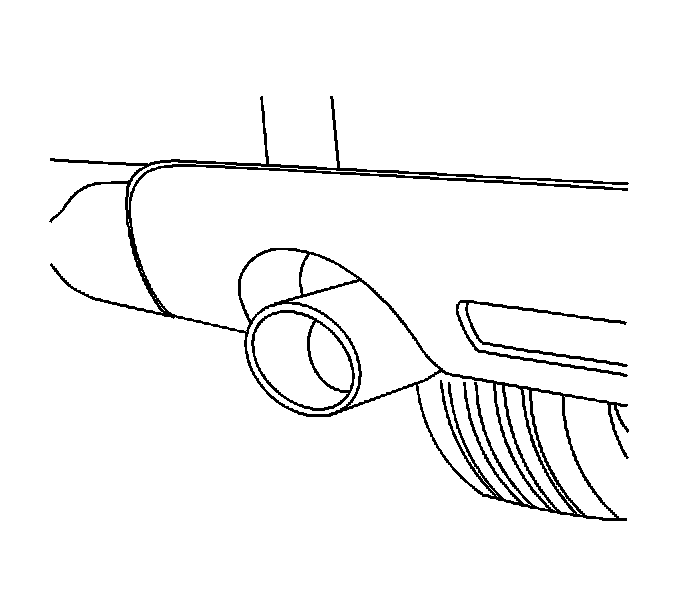

Exhaust Pipe: Service and Repair
Exhaust Tail Pipe Extension Replacement
Removal Procedure

1. Raise and support the vehicle. Refer to Lifting and Jacking the Vehicle (Service and Repair) .
2. Remove the exhaust system from the rear suspension hanger rods, and the tail pipe hanger rods.

3. Mark the location of the existing exhaust tip on the exhaust pipe.

4. Remove the weld from the top and bottom of the exhaust tip.
5. Remove the exhaust tip.

6. Clean the remaining weld from the exhaust pipe.
Installation Procedure

1. Install the NEW exhaust tip to the exhaust pipe, and align to the mark previously made during disassembly.
2. Re-install the exhaust system to the rear suspension hanger rods, and the tail pipe hanger rods.

3. Visually align the exhaust tip to the vehicle.
4. Tack weld the exhaust tip to the vehicle.
5. Remove the exhaust system from the rear suspension hanger rods, and the tail pipe hanger rods.
6. Weld the exhaust tip to the exhaust pipe in the same locations the original tip had been welded.
7. Re-install the exhaust system to the rear suspension hanger rods, and the tail pipe hanger rods.